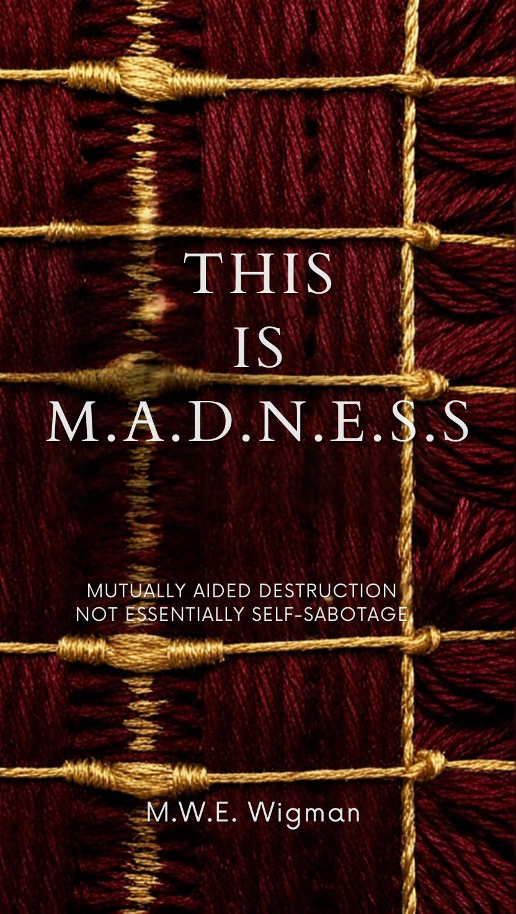
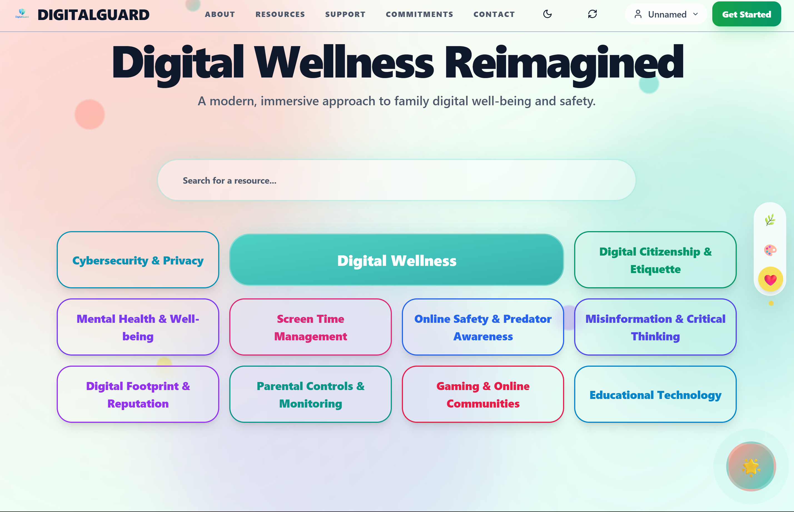

A nonfiction trilogy of intention, consequence, and resilience — psychology and systems thinking written with a narrative, poetic cadence.
“Sealed — I’ll reply within a day or two.”
This page intentionally left blank.
“What if the weight you carry isn’t what breaks you — but what shapes you?”
A lyrical journey into autonomy, adversity, and transformation — the tension between control and surrender, ripple and consequence, scar and wisdom. Each chapter unfolds like a stitch: not to conceal rupture, but to reveal how chosen burdens reshape us from within.
With QR-linked shadow texts, spiral acrostics, and tactile print overlays, it dissolves the boundary between reader and page.

© 2026 MAXIMUS
MADE WITH OPEN-SOURCE TOOLS
“We often meet our destiny along the path we chose to avoid it.”
A compact philosophical reflection on failure, intention, and the quiet tension between self and system — four chapters of personal reflection, metaphysical inquiry, and thematic minimalism, written for those who value depth over scale.
Not mass-market. A quiet invitation to think.
Book-aware automation for a thoughtful, visually consistent presence.
Messaging automation built to turn repetitive conversations into useful flows.
Security-reviewed local skills for audio, search, devices, diagnostics, and PDFs.
Crypto-trading bot with RSI, breakouts, grid logic, news sentiment, and backtesting.
I'm the full-stack engineer behind digitalguardianwellness.org — architecting and shipping the platform end-to-end, from database schema to deployed interface. The mission: technology that protects and supports people, not just platforms that extract from them.
Visit the site ↗Open source is how I vote for the kind of internet I want: free, accessible, and built for everyone. My projects live on GitHub — flip for the archive.
PRIVACY · AUTOMATION · ACCESSIBILITY

FLIP THE PAGE ⟶
I'm the full-stack engineer behind digitalguardianwellness.org — architecting and shipping the platform end-to-end, from database schema to deployed interface.
Network-wide ad-blocking — system, network & browser extensions.
Automating repetitive tasks to give people their time back.
“We often meet our destiny along the path we chose to avoid it.” A compact philosophical reflection on failure, intention, and the tension between self and system — four chapters for those who value depth over scale.
“What if the weight you carry isn’t what breaks you — but what shapes you?” A lyrical journey into autonomy, adversity, and transformation — control and surrender, ripple and consequence, scar and wisdom.
Mutually Aided Destruction, Not Essentially Self-Sabotage. In progress.
A nonfiction trilogy of intention, consequence, and resilience — psychology and systems thinking written with a narrative, poetic cadence.
© 2026 MAXIMUS · MAX WIGMAN — BUILT WITH OPEN-SOURCE TOOLS · MAXIMUS.DPDNS.ORG
Open-source software, shared knowledge, and community-driven innovation.
Keep scrolling — the book loops ↺